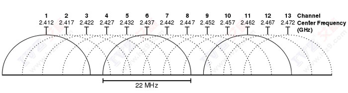
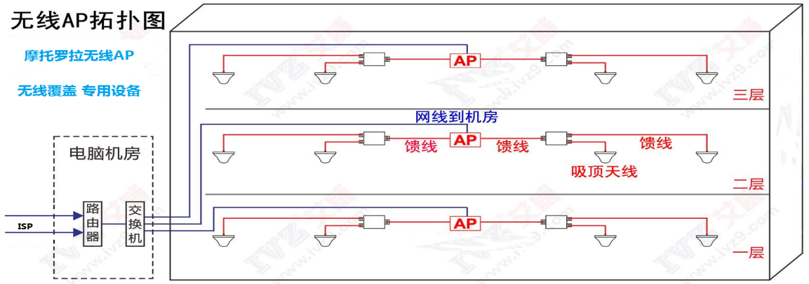

远洋洲际酒店网络方案
无线网络覆盖主要有两大类型的覆盖方案，一类为室内覆盖方案，一类为室外覆盖方案。室内覆盖方案又分为室内面板AP及室内分布式AP覆盖方案。室外覆盖方案为室外定向AP及室外全向AP覆盖方案。
2.4G无线WiFi真正互不干扰的只有1、6、11这3个信道，如果在一个区域使用众多的小型无线路由器，会产生同频干扰，导致无线信号不稳定、掉线、网速低。选择合理的无线覆盖方案，对无线信号质量和稳定性起决定性作用。

根据现场考察贵酒店的网络情况，分析需要二种无线覆盖结合的方式对贵酒店进行无线网络覆盖。分别为分布式无线AP覆盖方式、面板式无线AP覆盖方式。
解决方案
1、摩托罗拉无线AP覆盖方案拓扑图：

方案叙述：此方案使用中国联通50M互联网专线接入酒店原有网管设备、通过POE交换机对放置在楼层管井里的分布式AP进行供电并且传输网络信号，AP通过馈线经过耦合器与全向增益天线相连，天线安装在各个点位进行无线网络的覆盖和传输。
方案特点：利用酒店原有的摩托罗拉无线AP进行重新部署、该方案信号强，覆盖范围广，采用瘦模式增加带机量，上网高峰期不会影响上网体验。
适用于此方案的区域为大堂公共区域、餐饮大厅、包间、宴会厅。
2、面板式无线AP覆盖方案拓扑图：

方案叙述：此方案使用中国电信50M互联网专线接入、由我司负责重新部署安装网管设备、在每一间客房内安装86面板式无线AP，加装POE供电交换机，通过酒店原有网线对AP进行供电及网络信号传输以达到无线网络覆盖。
方案特点：此方案覆盖效果好、充分利用现有资源、安装简便、不破坏原有美观布局。仅需要将墙面有线接口面板更换为面板型AP即可。安装时间短，无需布线施工，不影响正常运营。

适用此方案的区域为酒店客房，共503个房间